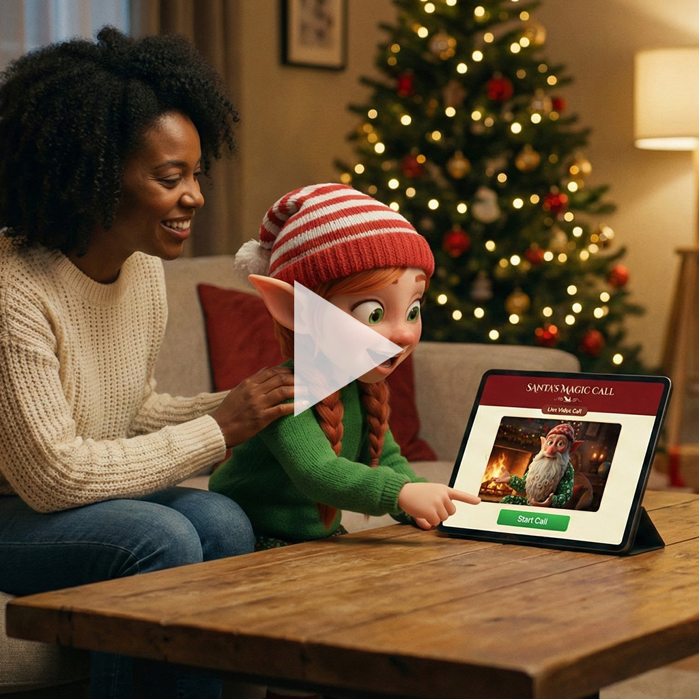

The magic was the promise. A dependable AI service was the challenge.
Turned a voice-AI concept into a live, purchasable product in about a month, connecting character behavior, behavioral safeguards, commerce, and service operations.
A five-minute conversation with Santa needed to feel personal to a child and straightforward to a parent. I shaped the product around that shared promise, from the character’s responses to purchase, access, and session boundaries.
At a Glance
Project Overview
- Venture: Santa’s Magic Call
- Role: Founder-led product strategy, experience architecture, and implementation
- Timeline: About one month from concept to live, purchasable product
- Team: Solo founder/operator supported by AI agents, automations, and a small network of parent testers
Founder Responsibility
- Product direction: Family promise, target experience, and scope
- Trust requirements: Character boundaries, sensitive-topic handling, and parent access
- Delivery: Technology choices, commercial flow, and integration priorities
- Go-to-market: Positioning, brand narrative, and launch content
Challenge
The opportunity was a focused holiday conversation at home, with less emphasis on screens and gift lists. The challenge was making that promise credible when an AI agent could respond unpredictably.
A child-facing service needed more than a friendly voice: clear behavioral limits, parent-controlled access, a bounded session, and reliable operation. A failure in any one of those layers could undermine the entire experience.
- Unpredictable behavior could break the promise. Unexpected questions and sensitive topics required clear boundaries without losing Santa’s warmth or disrupting family traditions.
- Parents needed confidence in the whole service. Purchase, access, and session limits had to be understandable, alongside the conversation itself.
- A short holiday window constrained delivery. One founder, supported by AI agents and automation, had to connect the experience and operating model without a large support team.
The central product question: could character, safeguards, and service operations work together well enough to justify a launch?
Objectives
Create a calm, playful conversation centered on a child’s imagination, kindness, and creativity rather than a gift list.
- Make the promise specific. Define a five-minute voice experience with enough flexibility for different children and enough structure to stay focused.
- Build trust into the service. Establish behavioral boundaries, parent-controlled access, and clear session expectations.
- Establish what a launch would require. Connect the commercial and technical flow, rehearse difficult scenarios, and identify dependencies needing further validation.
Building visibility through character-led content
Earn attention through humor. A playful take on an extravagant Christmas wish introduced the character and directed viewers to the website.
Santa as a calm, grounded character
Make the character recognizable. Warmth and personality brought the product’s tone into the marketing, giving viewers a feel for the experience before visiting the website.

Show what the experience offers. An at-home moment of connection made the family promise tangible, with a website invitation carrying interest into the next step.
Approach
I treated the character, commercial promise, and operating system as connected product decisions. The proposition was a warm, playful moment of connection at home. That gave me a basis for deciding which behaviors belonged in the experience, what parents needed to understand before buying, and what the service had to deliver. The product launched for purchase; customer demand and sustained use remained to be established.
- Define the experience before choosing the tools. Shaped Santa around warmth, attention, and the child’s imagination. A five-minute emotional arc gave the conversation direction without prescribing every response; rules such as avoiding a naughty list translated that intent into character behavior.
- Turn trust concerns into testable behavior. Documented restricted topics, gentle redirects, and responses to sensitive moments. Simulated parent and child scenarios helped surface behavior risks and refine requirements.
- Connect the promise to the operating model. Linked checkout, automation, magic-link access, and time-limited voice sessions. During development, this exposed reliable call initiation as a dependency requiring further work.
- Keep the launch story consistent with the product. Developed the landing page, character-led videos, and launch concepts around the same warmth and playfulness, rather than treating marketing as a separate promise.
Approach Examples

Start with the promise. Decide what the experience must deliver before selecting what to build.

Find where trust could break. Rehearse difficult scenarios and turn them into explicit behavior requirements.
Outcomes
In about a month, the concept became a live, purchasable voice-AI product spanning character behavior, commerce, access, and session control.
- A defined experience to build and evaluate. Character principles, conversation structure, and behavioral boundaries provided a shared basis for implementation and scenario rehearsal.
- A connected commercial and service flow. Purchase, access, and bounded sessions were connected in the launched product.
- Reusable foundations for further development. Documented behavior patterns, access flows, and scenarios provided material for continued testing and future character-led services.
- A product story brought to market. The landing page and character-led advertising videos carried the experience’s warmth and humor into content used to build visibility and direct viewers to the website.
The launch brought the AI experience, commerce, and service flow into a live, purchasable product. Scenario rehearsals informed behavioral safeguards—and made us laugh out loud. Customer traction, family outcomes, and sustained service reliability remained to be evaluated.